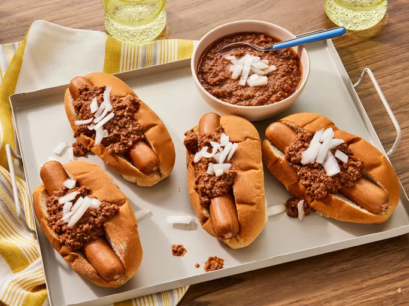

Back to Odin Recipes
Jeff's Hot Dog Chili

This hot dog chili recipe took me
many years to get just right!
It reminds me of the chili I had as a kid.
Ingridients
- 1 pound ground beef (You can substitute ground turkey for ground beef.
Just add a little oil to the saucepan before cooking.)
- ⅓ cup water
- 5 ounces tomato sauce
- ½ cup ketchup
- 2 ½ teaspoons chili powder
- ½ teaspoon salt
- ½ teaspoon ground black pepper
- ½ teaspoon white sugar, or to taste
- ½ teaspoon onion powder
- 1 dash Worcestershire sauce
Steps
- Gather all ingredients.
- Place ground beef and water in a
large saucepan; use a potato masher to break apart beef.
- Stir in tomato sauce, ketchup, chili powder, salt, black pepper,
sugar, onion powder, and Worcestershire sauce.
- Bring to a boil, then simmer over medium heat until beef is cooked
and chili thickens, about 20 minutes.
- Serve over hot dogs and enjoy!
Here are some other recipes you might like: